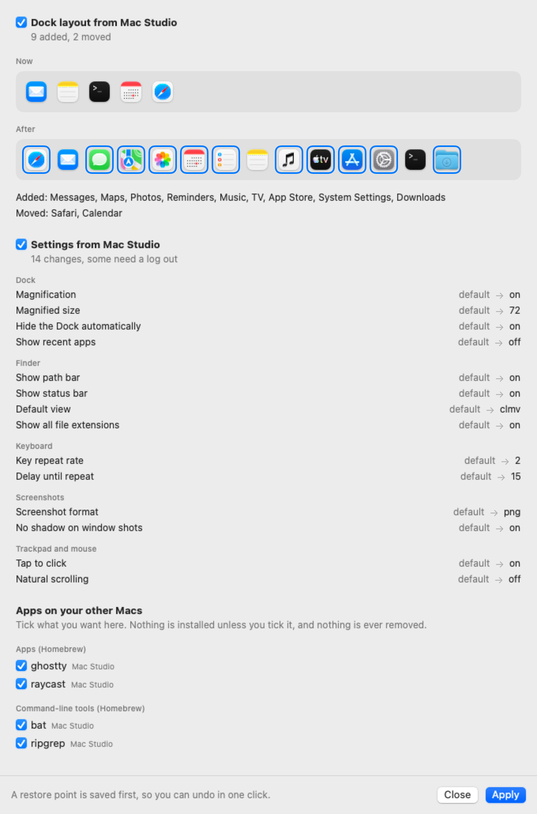
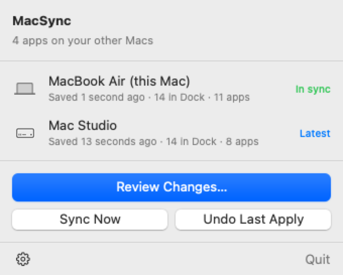

Your Dock, exactly
Apps, folders, spacers and links, in order, with size and position. Apps are matched by identity, so they line up even when their paths differ between Macs.
MacSync keeps your Dock, apps and settings identical across your MacBook, Mac Studio and Mac Pro. It syncs through your own iCloud Drive, shows you every change first, and undoes in one click.
brew tap onlymoein/tap && brew trust onlymoein/tap && brew install --cask macsyncHomebrew install arrives with the first signed release. Until then, build it from source.


Migration Assistant runs one time. MacSync keeps going, so a new Mac feels like your Mac in minutes and stays that way.
MacSync writes a small file about this Mac to your iCloud Drive: Dock, apps and, with Pro, settings. No server and no account.
Another Mac has a newer layout? You see the Dock before and after, the settings that differ and the apps you're missing. Nothing changes until you press Apply.
A restore point is saved first. If you don't like the result, Undo puts the Dock and settings back exactly as they were.
Apps, folders, spacers and links, in order, with size and position. Apps are matched by identity, so they line up even when their paths differ between Macs.
Homebrew apps and tools, and Mac App Store apps. You tick what you want on each Mac. MacSync adds, and never uninstalls anything.
Trackpad, keyboard, Finder, Dock behavior, appearance and screenshots, plus the preferences of the apps you pick. A setting left at its default stays at its default.
See the changes as icons and plain words, and untick anything you don't want. Syncing in the background only saves and checks. It never changes a Mac on its own.
Every apply saves a restore point first. Undo brings back the Dock and settings exactly, and tells you which installed apps stay.
Your setup goes to your own iCloud Drive and nowhere else. Passwords, tokens and keys are never copied, and the code is open for you to read.
No merge screens. MacSync picks the most recent edit, and it saves a restore point before it applies, so the other Mac's version is never lost.

MacSync copies an allowlist of fields, not whole preference files.
Dock and apps are free. Pro adds settings sync. Pricing isn't set yet, and until it is, Pro is switched on for everyone.
Always
One-time purchase, price to be announced
No. MacSync uses the iCloud Drive you're already signed in to. Every Mac needs iCloud Drive turned on and the same Apple Account.
Never. MacSync only adds apps you tick, and undo restores your Dock and settings, not your app list.
MacSync opens each app's App Store page so you can click Get. The command-line tool for the App Store needs administrator rights, so MacSync doesn't use it.
No. In the background it only saves this Mac's setup and checks the others. Changes are applied when you review and press Apply.
macOS 13 and later, on Apple silicon and Intel. It has been tested on a single Mac so far. Early access means it needs your feedback.
Yes, under the MIT license. You can read every line on GitHub.